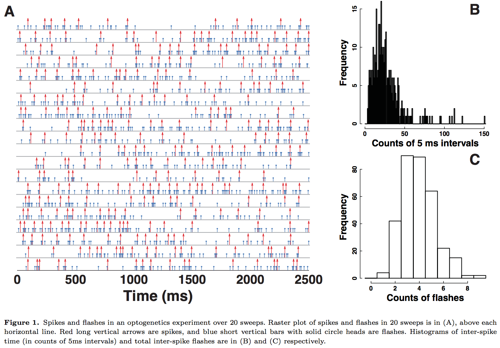
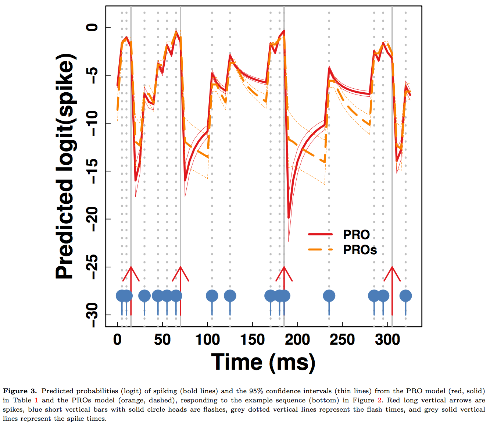
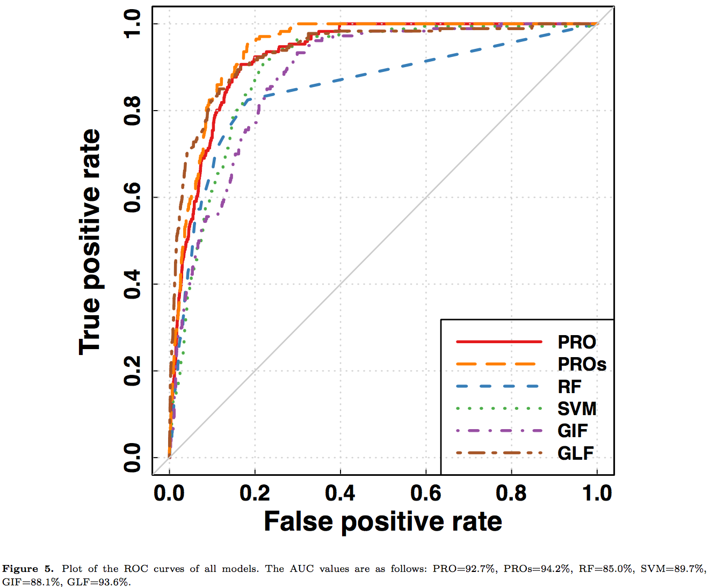

Complex Modeling of Brain Dynamics
Xi (Rossi) LUO
Department of Biostatistics
Center for Statistical Sciences
Computation in Brain and Mind
Brown Institute for Brain Science
Brown Data Science Initiative
The ABCD Research Group

June 2, 2017
Funding: NSF/DMS (BD2K) 1557467; NIH R01EB022911, P20GM103645, P01AA019072, P30AI042853
COBRE CCNSF
- Core leaders: Jerome Sanes, Sheila Blumstein, John Davenport, Zhijin (Jean) Wu
- Many project leaders working on diverse problems
- From flies, to monkeys, and to humans
- Heterogeneous and complex data
Genetics, spike trains, optogenetics, electroencephalogram/EEG, functional MRI
Collaborative Team
- BIBS: Jeff Moher, Dan McCarthy, Maro Machizawa, Joo-Hyun Song
- Biostat: Yi Zhao, Brendan Le
- CCV: Peisi Yan
- UCSF: Steve Gee, Vikaas Sohal
- UPenn: Dylan Small
- SHJTU: Weidong Liu
- Many scientists who made their data publicly available!

$10^{11}$ neurons
Ex: optogenetics modeling Luo et al, Stat Med, 16

$10^4$ genes, $10^6$ SNPs
Ex: Gene networks Liu & Luo, JMVA, 15

$10^6$ functional MRI voxels
Ex: Brain networks Yi & Zhao, 17+
- Overview: machine learning, Bayesian, probability/matrix theory, optimization, large-scale computing
- Idea: integrate techniques from CS, Biology, Math, and Stat to uncover brain dynamics from data
Ex 1: Genes and HIV Brains
- Gene expression arrays on post-mortem brain tissues Borjabad et al, 2011
- Tens of thousands genes
- Outcome: controls, treated HAND, untreated HAND
- Data: publicly available from NIH GEO GSE28160
- R package also publicly available from CRAN
- Follow NIH's call for reproducible research
- Question: are there relationships between expressions and HIV treatment?
Data
Value distribution provided by NCBI Portal https://www.ncbi.nlm.nih.gov/geo/geo2r/
Method Comparision
- Massive testing
- T tests for each gene vs HAND treatment (Yes/No)
- Drawbacks: far from biology, no validation, sample size, multiple testing
- Network modeling
- Goal: how all genes together as networks related to treatment
- Need computational and mathematical tools to find gene networks
- Black-box machine learning and artificial intelligence
- Feed genes into predictive models
- Examples: random forests, support vector machine
- Test prediction performance on an independent sample
Results

Other Applications: fMRI, EEG, ...
- Input matrix (csv): observations (row) $\times$ variables (col)
- Output: network, prediction (under construction)
DEMO
Ex 2: Optogenetics
- Technology to stimulate neurons
- Nature Method of the Year 2010
Data (
light stimuli ,
neural spikes )

Model
Prediction Comparision
Our
Ex 3: EEG and Behavior
- Chnage of mind (CoM) by hand movement trajectory
- Can we predict before the movement?
Our model predicts CoM using EEG
Ex 4: Beyond "Simple" Networks

Question: quantify
from stimulus to orange outcome circle/region Heim et al, 09
Pathway=Activation+Connectivity
- Activation: stimulus $\rightarrow$ brain region activity
- Connectivity: one brain region $\rightarrow$ another region
- Whether not two or more brain regions "correlate"
- Pathway: stimulus $\rightarrow$ brain region A $\rightarrow$ region B
- Strong path: strong activation
and strong conn - Zero path: zero activation
or zero conn, including- Zero activation + strong conn = zero
- Strong activation + zero conn = zero


Stim-M25-R and Stim-M65-R significant shown largest weight areas
- M65 responsible for language processing, larger flow under story
- M25 responsible for uncertainty, larger flow under math